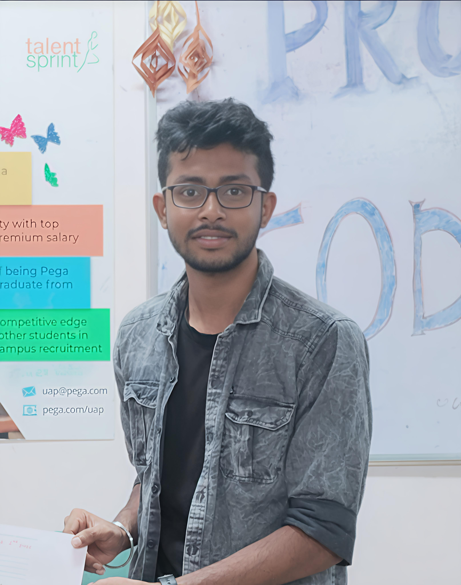

Turpati Vasanth Kumar
Home |
About |
Tools and Technologies |
Contact
Home
Welcome to my portfolio!
My objective is to apply my knowledge of programming, data
structures, algorithms, and front-end technologies to contribute to
real-world software development projects and continuously improve my
technical skills. I am eager to grow professionally and
make a meaningful impact in the tech industry.
About

I am Turpati Vasanth Kumar, a passionate B.Tech
student in Information Technology at B V Raju Institute of
Technology , currently holding a CGPA of 7.60/10. I
have
a strong interest in programming, data structures, algorithms, and
front-end development. I enjoy building responsive, user-friendly
web applications using HTML, CSS, Bootstrap, and JavaScript. I am a
quick learner, effective communicator, and a dedicated team player
who believes in continuous learning and practical problem-solving.
My goal is to join a dynamic organization where I can contribute
meaningfully to software development projects while enhancing my
skills. Outside academics, I’ve actively participated in NCC
activities, organized a blood donation camp, and volunteered in an
election campaign to support community engagement.


Projects
- PriorityPal – Task Management App using HTML,
CSS, and JavaScript with local storage.
- WikiExplorer – Wikipedia Search Interface using
public API and JavaScript.
- Twitter Sentiment Analysis – NLP-based Python
project using NLTK and Logistic Regression.
Phone: 628******
Email: turpativasanth2003@gmail.com
GitHub: github.com